Dough Spinner stands as a puzzle within Manufactoria 2022 that both frustrates and delights me, largely due to the extensive time I've devoted to refining my approach without yet achieving perfection.
Day 1
The Challenge
Here's the task at hand:
My objective is to manage an input containing anywhere from 0 to 20 tokens on a tape and ingeniously devise a method to reverse the sequence of alternating-colored tokens.
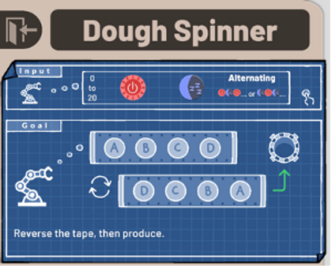
For instance, if the input sequence is red, blue, red, blue, the desired outcome would be blue, red, blue, red.
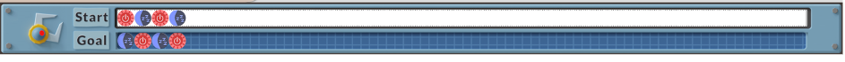
To achieve this, I'm equipped with two varieties of apparatus: Scanners and Stampers. Scanners discern whether a token is red or blue by eliminating it from the tape, whereas Stampers are used to place a new token (either red or blue) onto the tape. Additionally, conveyors and pipes are at my disposal to navigate the robot to the intended location, and upon completion of the correct sequence, the robot should be directed to the exit (with erroneous attempts being discarded).
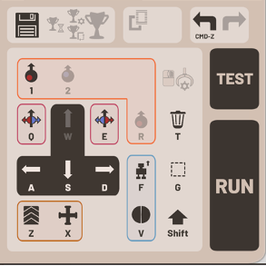
The workspace provided is a grid of 11 by 11 squares, imposing a constraint on the placement and arrangement of all equipment.
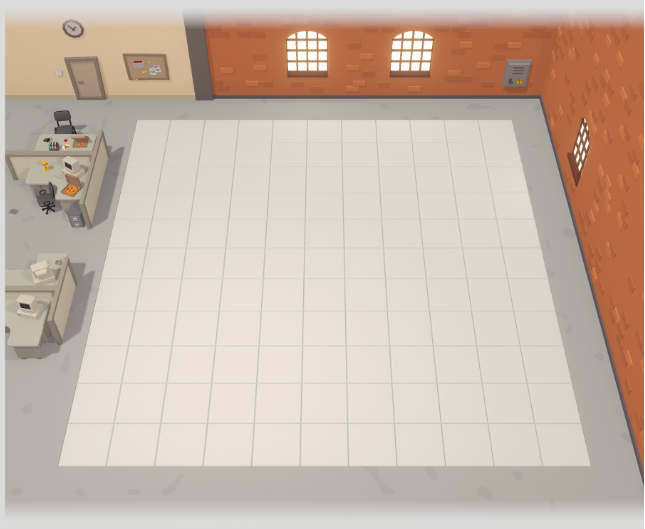
Without further ado, let's dive in!
Initial Strategy
Upon encountering the term "reverse," I immediately thought about scanning one token and adding a token of the other color (red vs. blue). Alas this will only work for even number of tokens. As the reversal is not on each token's color but rather a sequential one: from forward to backward. For odd number of tokens, the output will be the same as the input. For example, with an input of 7 blue-starting tokens, the output would remain unchanged.
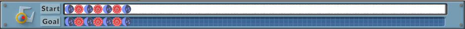
My intuitive method unfolded as follows:
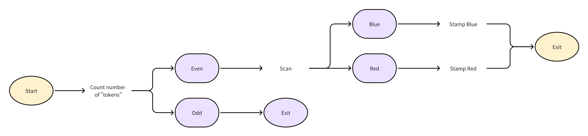
Upon reviewing the operational flow, it seemed straightforward: for an even number of tokens, shift the first token to the last position; if the number is odd, no action is required. However, directly counting the tokens proved impossible. Even employing multiple Scanners for this task would be inefficient, as each scan eliminates the scanned token. The key lies in reinstating all removed tokens in reverse order. Given the input limit of 20 tokens, I only need to account for that maximum. Great news! The maximum input is 20 tokens, making the 11 by 11 grid potentially sufficient.
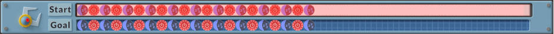
It's certainly worth a shot! Isn't it?
My first robot
After 30 minutes of meticulous planning to fit all elements within the confined space, I had my setup.

As depicted, the solution might appear complex, yet the underlying logic is straightforward. Given the tokens' alternating colors, identifying the initial color simplifies the subsequent sequence. For example, with an input of "red, blue, red, blue," after processing through the first scanner and eliminating each token, the tape exits devoid of tokens. It then receives a stamp with the last token's color and reverses sequence to "blue, red, blue, red" - task accomplished! This robot, though large and occupying nearly the entire grid (which reminds me of the first computer in history), surprisingly mirrors the efficiency of some of the top-performing designs, and here is proof:

In terms of time, this robot is not far from those best-performing ones. In terms of speed, it competes closely with the best out there. However, I aspired to enhance its efficiency by minimizing its size and components. Alas, it was late, and I chose to ponder this further after some rest.
Day 2
Sleep is indeed a great thing. The moment I woke up, a fresh idea came to me: even though the system does not allow us to count the total number of tokens, there is another way around this limitation.
The idea is this: we can append a token to the end of the streak to serve as a stop sign. First, we scan the colour of the opening token, then add a token of the opposite colour. This creates a pair of identical colours at the tail end, which we can use as a termination signal.
Take the example RBRB. We scan the first token and find it is R, so we add a Blue token (-R+B), yielding BRBB.

Now there are two consecutive Bs at the end, which marks where the sequence terminates. From here, we check the tokens in pairs. Each pair must be BR, as the colors alternate. When we encounter a BR pair, we cycle it: remove it from the front and reattach it at the back (-BR+BR). So BRBB becomes BBBR. Now the leading pair is BB rather than BR, which signals the end. We add one final BR (-BB+BR) and send the result to the finish line: BRBR. Done.
For an odd-length input, the same logic applies. For example, RBR proceeds as follows: RBR -> (-R+B) -> BRB -> (-BR+BR) -> BBR -> (-BB+BR) -> RBR. For any longer variation, the mechanism is the same: we just need more iterations of the (-BR+BR) loop before we encounter the double-colour termination signal.
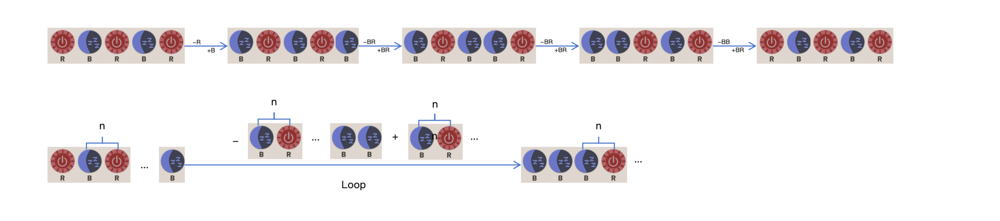
The only exception is a single token, say R. After (-R+B), we are left with no BR pair to cycle, only a lone B. So after checking and removing it, we simply stamp an R to complete the treatment.
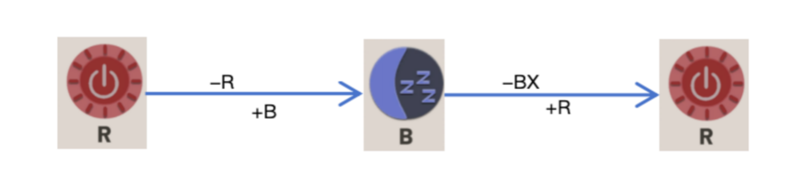
The same logic works for streaks beginning with B; we simply add an R instead of B at the start, and the loop becomes removing a RB pair from the start and reattaching RB from behind.
Here is the full setup:

With this approach implemented, everything improved. Processing time was reduced to 43, the layout required only 28 squares, and just 15 stamps and scanners were needed. But how to make it even better, especially reducing the number of squares further? I had been thinking: since the loop is (-BR+BR), the operations can be reordered. If we swap the sequence to (+BR-BR), or if the +BR that handles the double-colour termination is performed beforehand rather than at the end, the layout changes.
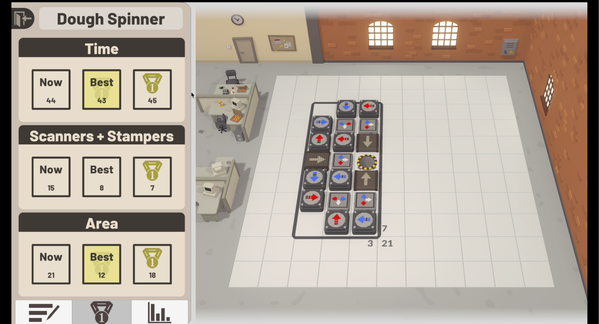
And indeed, this reordering saved seven unit squares. The trade-off, however, was that processing time increased by 1. I believe it's due to the additional travelator installed there. I wanted to push further still: to reduce the number of scanners and stampers as well as the space required. I thought about combining similar steps. Here is the result:
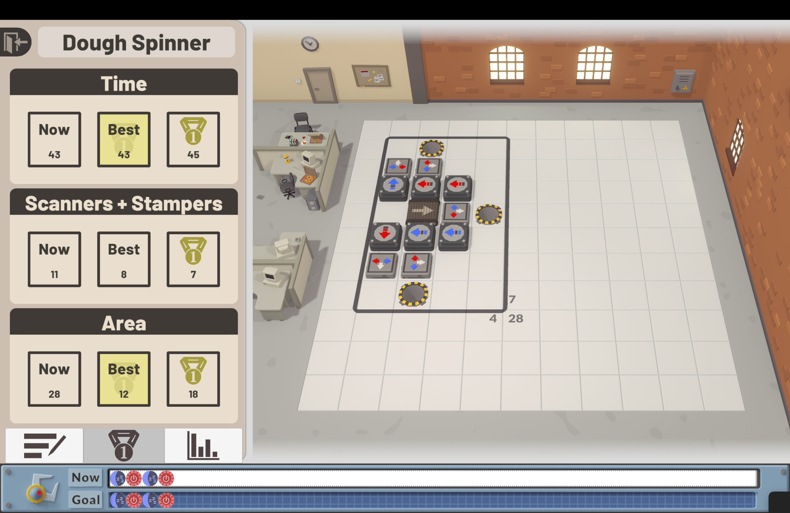
It seems there is nothing to be done. So I left the game and started my day.
Day 3
After another refreshing sleep, I had a new idea: is it possible to unify the two colour cases into one (starting with R/B)?
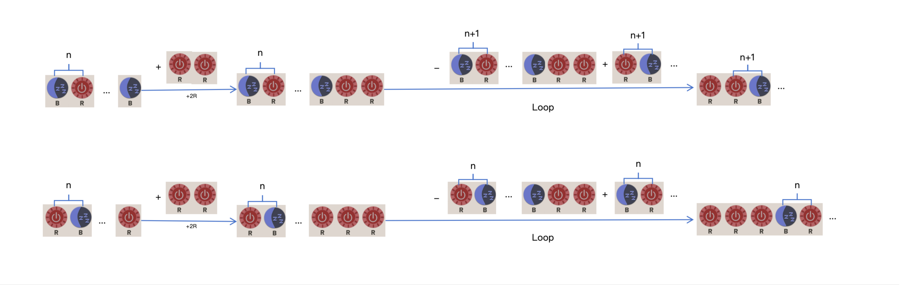
What if we always add R or B to the streak, regardless of its starting colour? Consider RBR: we append two Rs, giving RBRRR. Then we check pairs from the tail - if we find RB, we replace it with BR. So RBRRR becomes RRRBR. Removing the two leading Rs yields RBR, which is exactly the result we want. For RBRB: after appending two Rs we have RBRBRR. We then cycle RB -> BR at the tail, twice, giving RRBRBR. Remove the leading RR, and we are done. The same procedure works symmetrically for streaks beginning with B.
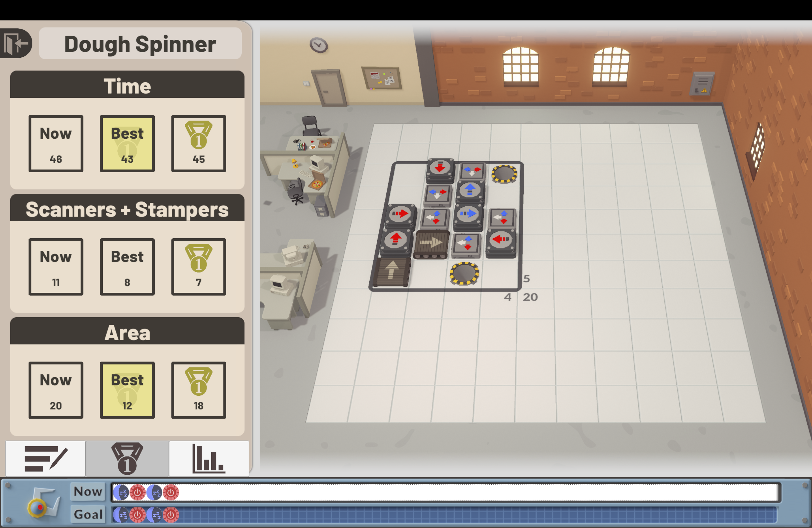
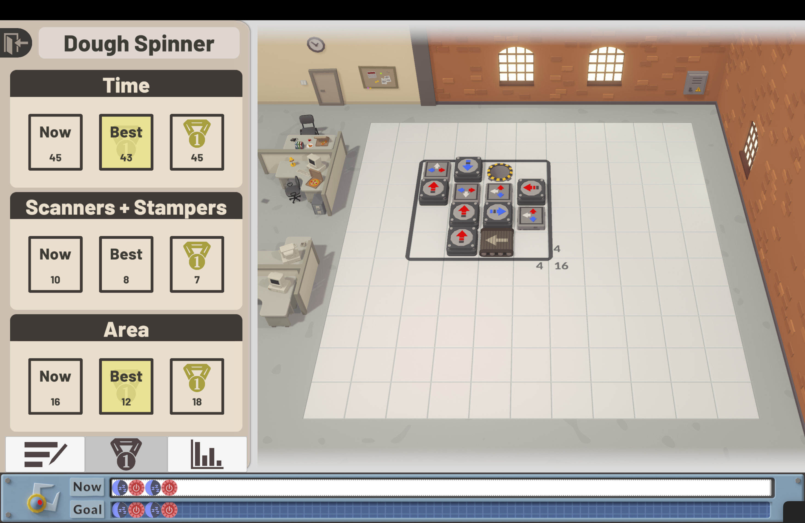
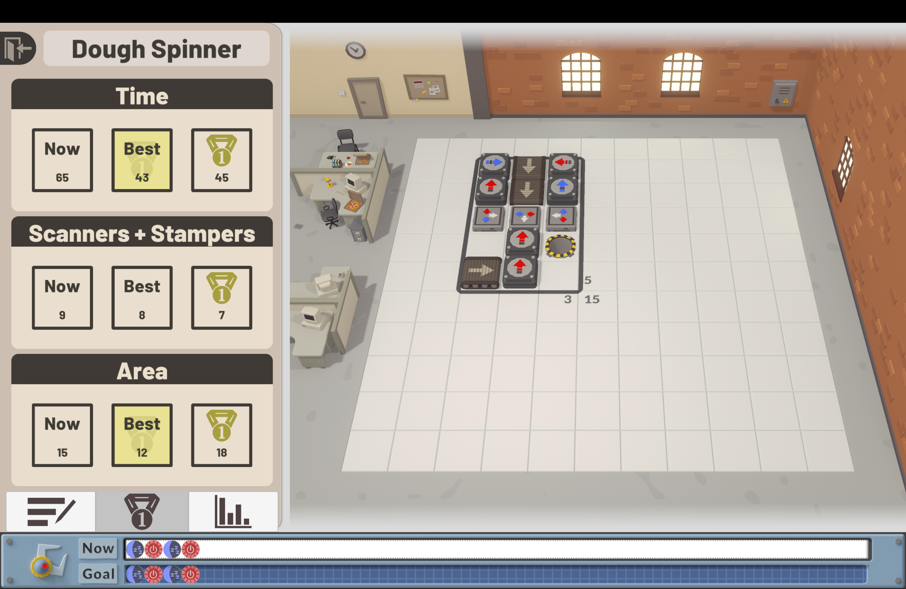
After working through the iterations of layout and streamlining the workflow with this combined approach, the entire setup ran successfully across all input possibilities using only eight scanners and stampers and twelve squares.
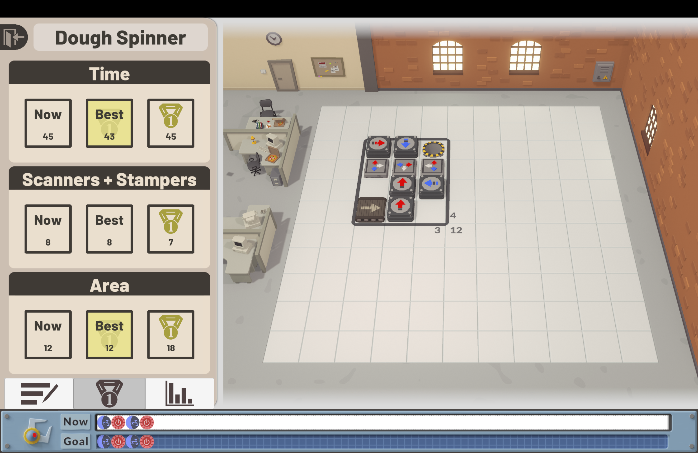
That said, it appears the same result might be achievable with just seven scanners and stampers. But time is up. I need to go. That optimisation will have to be reserved for next time.
If you have any thought or idea to optimise further, please write in the comment.
Thank you!
Here is a summary of the 3-day adventure.
Dough Spinner - Three Iterations
Manufactoria 2022 - Reversing alternating-colour token sequences (<=20 tokens)
| Day | Approach | Key Idea | Programming Analogy | Metrics |
|---|---|---|---|---|
| Day 1 | Spatial unrolling with full destructive read and re-stamp |
|
|
~full grid Competitive speed Many devices |
| Day 2 | Sentinel-terminated pair cycling with colour-branched control flow |
|
|
43 steps 21 sq 11 devices |
| Day 3 | Colour-agnostic dual sentinel with unified control flow |
|
|
~same speed 12 sq 8 devices (7 conjectured) |